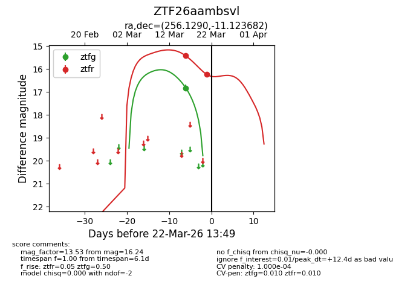
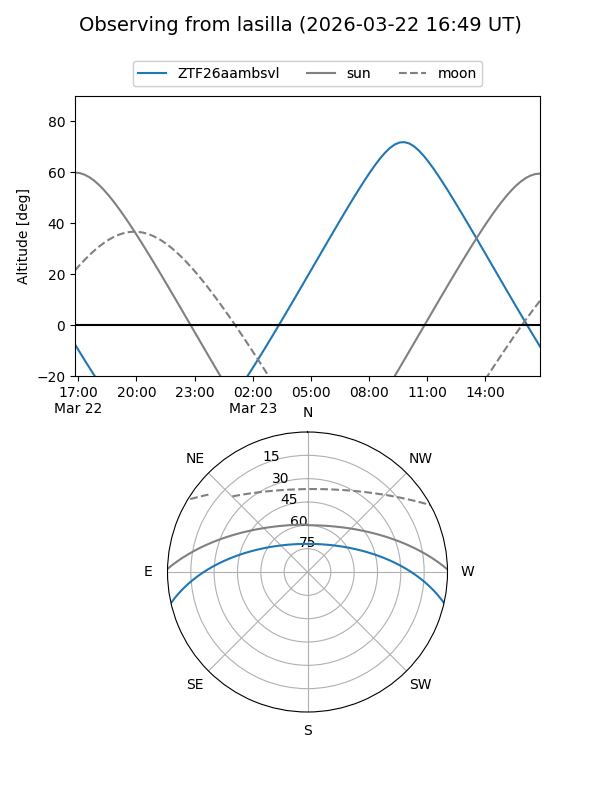
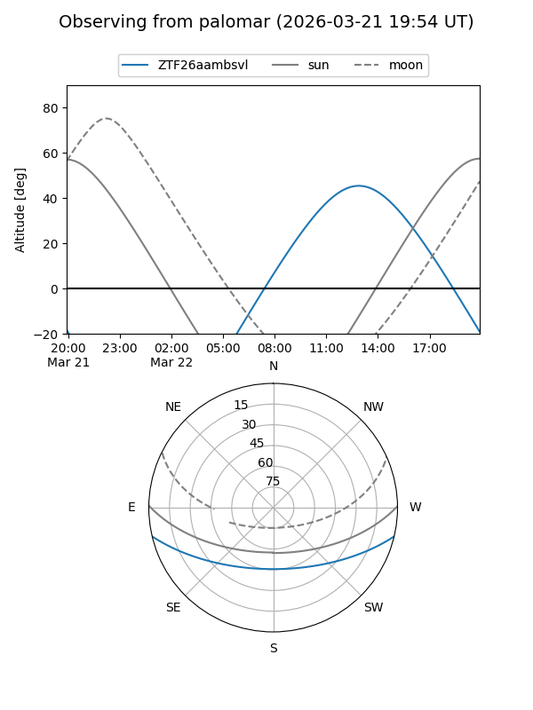
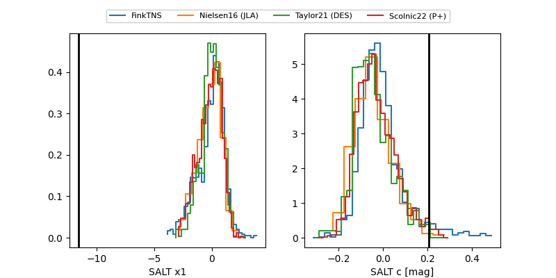

ZTF26aambsvl
Target ZTF26aambsvl at 2026-03-22 13:51
Aliases and brokers:
FINK: link
Lasair: link
ALeRCE: link
alt names
ZTF26aambsvl (ztf,fink_ztf)
Coordinates:
equatorial (ra, dec) = 256.1290,-11.12368
equatorial (HMS+DMS) = 17:04:30.95,-11:07:25.25
galactic (l, b) = (9.8788,+17.74730)
Flags:
likely cv
Photometry:
last ztfg=16.82, ztfr=16.24
1 ztfg, 2 ztfr detections
Lightcurve

Visibility


Additional plots
